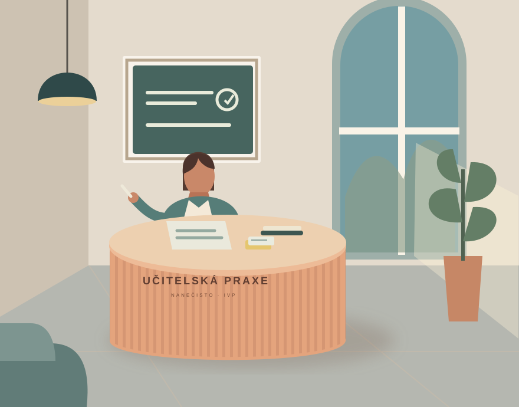
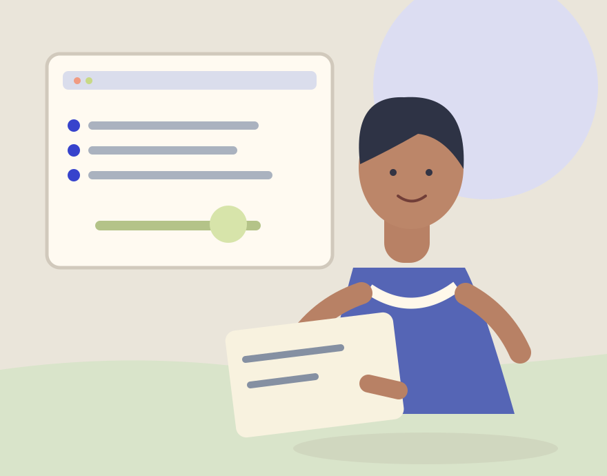
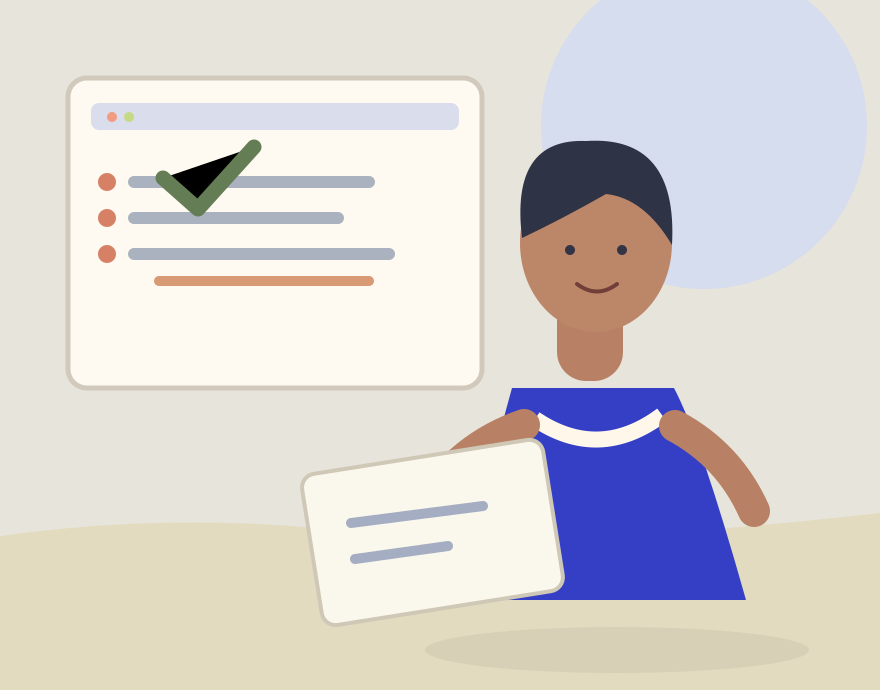

Dostanete malý úkol.
Všimněte si cíle, kontextu a toho, co ještě nevíte.
✳ MALÝ KROK K VELKÉMU ROZHODNUTÍ
Zkuste si rozhodnutí, které může přijít při práci s klientem nebo při výuce. Krátký případ, vaše volba a okamžité vysvětlení.

„Můžete mi to ukázat ještě jednou?“
Rozhodnutí nanečisto.
Zkušenost do praxe.
PRO STUDUJÍCÍ · PŘÍPRAVA NA PRAXE
Kariérové poradenství a praktické vyučování.
Jeden případ může otevřít dobrou otázku pro mentora.

Klientova zakázka, informace, profesní hranice a plán. Od pozorování po vlastní projekt pod vedením.
4 pracovní úkoly · začněte jedním ↗UPV · OD NÁSLECHU PO REFLEXI
Rozbor výuky, náslechy, microteaching i souvislá praxe. Všimnout si, rozhodnout a ověřit výsledek.
4 pracovní úkoly · vaším tempem ↗Všech 48 situací je k dispozici v češtině i slovenštině. České sylaby nejsou slovenským studijním plánem. Jde o autorskou přípravu, ne schválenou náhradu praxe.
ŽÁDNÁ PŘÍPRAVA NENÍ POTŘEBA
Podklady a vysvětlení najdete
přímo u každé situace.
Všimněte si cíle, kontextu a toho, co ještě nevíte.
Zvolte další krok, který ve své studentské roli můžete obhájit.
Uvidíte důsledek, přečtete si důvod a otázku můžete probrat s mentorem.